Contents
close all; clear; % clc;
Parameters
sigma = 20; rng(10);
image_read
img = double(imread('../data/barbara256.png'));
img = double(imread('../data/barbara256-part.png')); im_noisy = img + randn(size(img))*sigma; figure('Name' , 'Noiseless'),imshow(img,[]),title('Noiseless'); figure('Name' , 'Noisy'),imshow(im_noisy,[]),title('Noisy');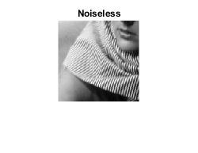

Part A
tic; im2 = myPCADenoising1(im_noisy); toc; disp("RMSE of denoised image -- part a") disp(myRMSE(im2 , img)) figure,imshow(im2,[]),title('Denoised Method 1');
Elapsed time is 0.050849 seconds.
RMSE of denoised image -- part a
0.0042
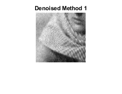 Part B
tic; im3 = myPCADenoising2(im_noisy); toc; disp("RMSE of denoised image -- part b") disp(myRMSE(im3 , img)) figure,imshow(im3,[]),title('Denoised Method 2');
Elapsed time is 86.320614 seconds.
RMSE of denoised image -- part b
0.0027
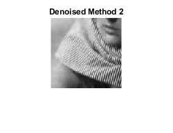 Part C
space_sig = 2; intensity_sig = 20; tic; [im_bil , ~] = myBilateralFiltering(im_noisy , space_sig , intensity_sig); toc; disp("RMSE of denoised image -- part c") disp(myRMSE(im_bil , img)) figure,imshow(im_bil,[]),title('Denoised Method Bilinear');
Elapsed time is 0.567299 seconds.
RMSE of denoised image -- part c
0.0095
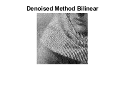 Part D
im1 = poissrnd(img); j = sqrt(im1 + 3/8); tic; j_denois = myPCADenoising2(j); toc; img_d = j_denois .* j_denois; img_d = img_d - 3/8; disp("RMSE of denoised image -- part d") disp(myRMSE(img_d , img)) figure,imshow(im1,[]),title('Poisson Noissy'); figure,imshow(img_d,[]),title('Poisson Denoised');
Elapsed time is 70.504973 seconds.
RMSE of denoised image -- part d
0.0183
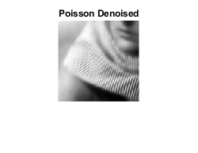 d_repeat
im1 = poissrnd(img/20); j = sqrt(im1 + 3/8); tic; j_denois = myPCADenoising2(j); toc; img_d = j_denois .* j_denois; img_d = img_d - 3/8; img_d = img_d * 20; disp("RMSE of denoised image -- part d") disp(myRMSE(img_d , img)) figure,imshow(im1,[]),title('Poisson Noissy Low intensity'); figure,imshow(img_d,[]),title('Poisson Denoised Low intensity');
Elapsed time is 47.334226 seconds.
RMSE of denoised image -- part d
1.0738
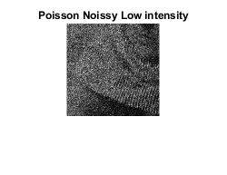 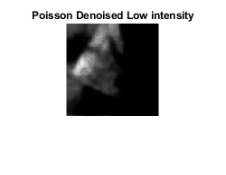 Observation
In this case the image is very poorly denoised with high amount of blacks in the image due to the problem of low intensity making denoising difficult.
Part E
No this will become an issue. If we clamp the value, the underlying noise distribution will be no more POisson distribution. Hence the approximation of poisson with modified normal distribution won't work. This will lead to bad denoising.
Image_Stream
img_stream = imread('../data/stream.png'); img = imcrop(img_stream,[1 128+256 127 127]); img = double(img); im_noisy = img + randn(size(img))*sigma; figure('Name' , 'Noiseless'),imshow(img,[]),title('Noiseless'); figure('Name' , 'Noisy'),imshow(im_noisy,[]),title('Noisy');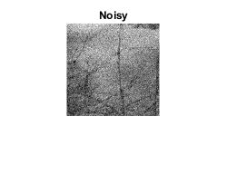
Part A
tic; im2 = myPCADenoising1(im_noisy); toc; disp("RMSE of denoised image -- part a") disp(myRMSE(im2 , img)) figure,imshow(im2,[]),title('Denoised Method 1');
Elapsed time is 0.033977 seconds.
RMSE of denoised image -- part a
0.0025
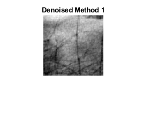 Part B
tic; im3 = myPCADenoising2(im_noisy); toc; disp("RMSE of denoised image -- part b") disp(myRMSE(im3 , img)) figure,imshow(im3,[]),title('Denoised Method 2');
Elapsed time is 62.578598 seconds.
RMSE of denoised image -- part b
0.0025
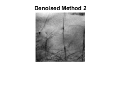 Part C
space_sig = 2; intensity_sig = 20; tic; [im_bil , ~] = myBilateralFiltering(im_noisy , space_sig , intensity_sig); toc; disp("RMSE of denoised image -- part c") disp(myRMSE(im_bil , img)) figure,imshow(im_bil,[]),title('Denoised Method Bilinear');
Elapsed time is 0.540832 seconds.
RMSE of denoised image -- part c
0.0074
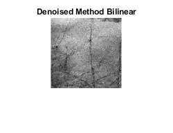 Part D
im1 = poissrnd(img); j = sqrt(im1 + 3/8); tic; j_denois = myPCADenoising2(j); toc; img_d = j_denois .* j_denois; img_d = img_d - 3/8; disp("RMSE of denoised image -- part d") disp(myRMSE(img_d , img)) figure,imshow(im1,[]),title('Poisson Noissy'); figure,imshow(img_d,[]),title('Poisson Denoised');
Elapsed time is 68.066568 seconds.
RMSE of denoised image -- part d
0.0147
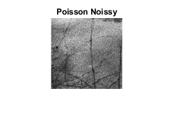 d_repeat
im1 = poissrnd(img/20); j = sqrt(im1 + 3/8); tic; j_denois = myPCADenoising2(j); toc; img_d = j_denois .* j_denois; img_d = img_d - 3/8; img_d = img_d * 20; disp("RMSE of denoised image -- part d") disp(myRMSE(img_d , img)) figure,imshow(im1,[]),title('Poisson Noissy Low intensity'); figure,imshow(img_d,[]),title('Poisson Denoised Low intensity');
Elapsed time is 44.003509 seconds.
RMSE of denoised image -- part d
1.0844
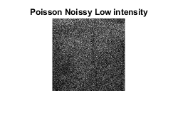 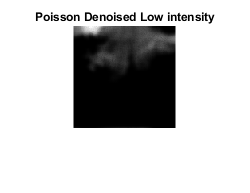